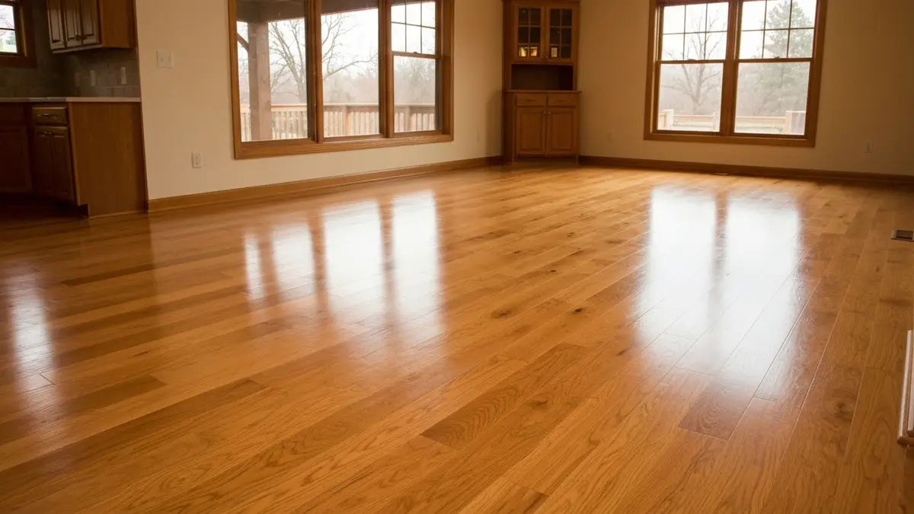

Hardwood Floor Refinishing in Council Bluffs, IA — Restore, Don't Replace
Serving Council Bluffs, Millard & surrounding Douglas County communities · We call back within 1 hour
Scratched, Dull, and Stained — But Not Beyond Saving
Hardwood floors that look like they need to be replaced usually don't. Refinishing removes years of wear by sanding to bare wood and building a fresh finish from scratch. Council Bluffs homes face significant seasonal humidity swings — wet summers and very dry winters — which stress finishes faster than in moderate climates. But underneath almost every worn floor is sound wood that's worth restoring. The free estimate tells you exactly what your floors need and what it will actually cost.

What Waiting Is Doing to Your Floors
- Scratches go deeper over time. Once finish is broken, bare wood absorbs grit and moisture. Surface damage escalates.
- Water damage is cumulative. Penetrates deeper each season. Older homes are especially exposed.
- Pre-sale or rental prep window is short. Refinishing requires cure time — schedule before listing or before new tenants move in.
- Replacement costs about twice as much. Refinishing at $3.50–$7/sqft. Good wood underneath is worth saving.
How We Refinish Floors in Council Bluffs
1Free in-home estimate — written quote, full refinish or screen-and-recoat. We assess wood species, thickness, and condition.
2Stain samples on your actual floor in your actual light. You approve before we commit.
3Dustless sanding — containment-and-vacuum captures dust at the source.
4Three finish coats of commercial-grade polyurethane. We recommend water-based for most homes here — handles humidity variation better than oil-based.
5Written cure protocol before we leave.
Council Bluffs Homeowners on the Results
"Our older Council Bluffs house had original hardwood floors that were dark and cloudy from years of wax buildup. After refinishing with a light natural finish they look like completely different floors: bright, clear, and beautiful. Perfect for a house this age."
"They recommended water-based finish specifically because of the humidity variation at our house near Lake Manawa. Knowledgeable, clean, and the price matched the estimate exactly. Floors look spectacular."
What Does Hardwood Refinishing Cost in Council Bluffs?
| Service | Price Range |
|---|---|
| Full refinish (sand, stain and seal) | $3.50–$7/sqft |
| Screen and recoat (no sanding) | $1.50–$2.50/sqft |
| Board replacement (if needed) | $10–$20/sqft |
A typical living room (~300 sqft) runs $1,050–$2,100. A full home (~1,200 sqft) typically runs $4,200–$8,400. Quotes are written and itemized.
Quick Answers Before You Call
Will there be a lot of dust?
Not with our dustless sanding system — captures dust at the source, especially important in occupied homes.
What if I choose the wrong stain?
You choose from test patches on your actual floor — before we proceed.
How long until I can use the room?
Water-based: 24 hours foot traffic, 72 hours furniture. Oil-based: 48 hours foot traffic, 7 days furniture.
Do you serve Council Bluffs?
Yes. We serve Council Bluffs and surrounding communities including Elkhorn, Bennington, Millard, Chalco, Valley, and Waterloo.
Get a Free Estimate for Your Council Bluffs Floors
Free estimate, 20 minutes, written price. (402) 771-4422 — we call back within 1 hour.